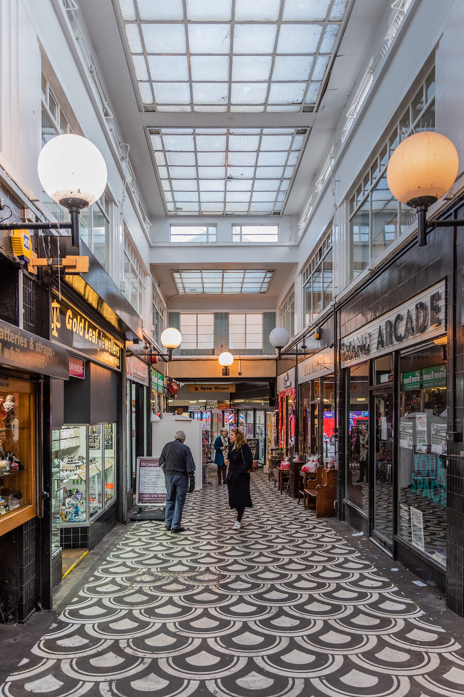

North Finchley High Road
A practical shopping spine with supermarkets, pharmacies, cafés, services and plenty of reasons to make a short local trip.
See shops →
A practical shopping spine with supermarkets, pharmacies, cafés, services and plenty of reasons to make a short local trip.
See shops →Bakeries, delis, cafés and takeaways — with one-line notes about what makes each worth a visit.
See shops →A compact retail destination on the High Road, useful for everyday errands and a straightforward browse.
See shops →From clothing and beauty to repairs and practical services, a neighbourhood directory can surface the specialists that are easy to overlook.
See shops →Gifts, stationery and small homewares, with a focus on independent makers and useful finds.
See shops →A seasonal market for makers, growers and local food traders.
See shops →